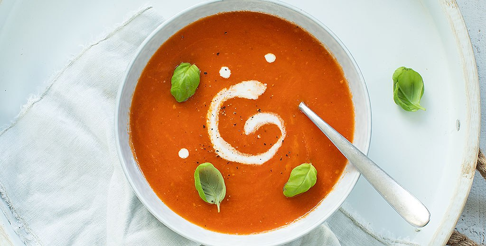

Tomatensoep

Ingredienten
- 1 ui
- 2 tenen knoflook
- 750 gr romatomaten
- 750 ml water
- 1 groentebouillontablet
- 1 klein blikje tomatenpuree
- Scheutje kookroom
- 2 eetlepels olijfolie
bereiding
-
Zet een soeppan op het vuur en fruit de ui en knoflook ongeveer 3 min in
de olijfolie. Voeg de tomaten parten toe en bak deze 5 min mee. Voeg het
water en de bouillontablet toe en roer de tomatenpuree er door, laat nog
een paar minuten koken.
-
Pureer nu alles met een staafmixer en laat de tomatensoep een paar
minuutjes doorkoken. Proef of de soep nog een beetje peper of zout nodig
heeft. Serveer de tomatensoep in 4 borden of kommen. Schenk in elk bord
of kom een klein scheutje kookroom. Garneer de soep eventueel met verse
basilicum.